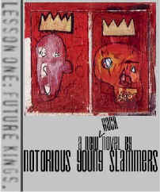

The security of this site (or lack thereof) has
been compromised. We are not elite by any means.* We are merely of the disenchanted few no
longer content to sit idly by and watch as the internet and society as a whole gets thrown
to the den of corruption and mindlessness. Must everything be dumbed down and watered so
that we are no longer a thinking society? Religion has lost it's place to the internet as
the opiate of the masses. Television is a cathode-ray nipple for absent parents. The
E-prefix is overwhelming us at every turn. (E-commerce, trading, auctions, church, porn,
shopping, etc.) Our attention span has been reduced to 11 seconds per page. (Is anyone
able to read a novel anymore?) What once was and could have been a valid and, dare we say,
beautiful medium has turned into something far more disturbing and unbeautiful. Treachery
and pure laziness is what we are being systematically reduced to as we lovingly clutch our
mouse and tap away incessantly at our keyboards in some numb chat room. When will it stop?
This hack is extended and dedicated to the purists who dare do go beyond what they are
"allowed". This is for everyone who refuses to do what they are told and
invariably question the so-called authority that they are confronted with. Some absolute
mentionables are: ne0h, mozy, forpaxe, gH, p0g0, keebler elves, dr_fdisk^, level seven,
Devil-C, HiP, v00d00, HFD/B, xoloth1, and Attrition. (PS: Monisha is loved by
AntiChrist.We get the picture.)
Notorious Young Slammers are Rev. Bob, Otto MadX, and High Plains Drifter.
We are starting off small with introductions. There will be more. We demand an audience.
*Elite, indeed. This was done easily enough using Micro$oft Front Page. (Make fun if you want.) This site had no security whatsoever and anyone with the time or inclination, technical ability aside, could do a hack such as this. Please note that no damage was done and that the old index can be found HERE. Again, this is not the end. -N.Y.S